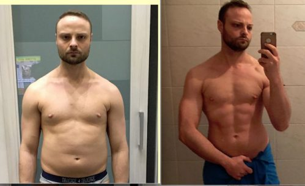

¡CIENTÍFICOS CONMOCIONADOS! Este estudiante de Argentina ha creado una fórmula vegetal única que ayuda a adelgazar entre 10 y 15 kg al mes ¡SIN dietas ni deporte!
Pero las grandes farmacéuticas no quieren que lo sepas.
Mónica pesaba más de 100 kg en su graduación del instituto
Mónica Sanz es la mejor estudiante de medicina de la ciudad. En 2 meses, esta chica única consiguió perder más de 35 kg con la ayuda de su invento. Y lo más importante es que no se puso a dieta ni hizo ejercicio. Lee cómo lo hizo en este artículo.
Mónica tenía sobrepeso desde la infancia. La niña siempre quiso adelgazar, pero mientras vivía con sus padres no lo consiguió - la madre de Mónica también tenía sobrepeso y mimaba a su hija desde pequeña con bollería casera, alimentos grasos, chocolate. "Era su forma de demostrarle su amor", dice Mónica.
Al salir de la escuela, Mónica fue a la facultad de medicina y eligió específicamente el departamento de dietética. Se dio cuenta de que una nutricionista con sobrepeso era ridícula y nadie la tomaría en serio. Así que decidió perder peso. Pero la adicción a la comida era más fuerte y nada le funcionaba.
Durante su último año de universidad, mientras escribía su tesis, Mónica se topó con una forma innovadora de descomponer la grasa, un método basado en extractos de plantas beneficiosas del que nunca había oído hablar.
Así que experimentó e ideó una fórmula, ¡que dio resultados asombrosos! En primer lugar, Mónica probó su fórmula en sí misma.
En sólo dos meses, Mónica consiguió deshacerse de 35 kilos de más.
Después probó la fórmula con su madre, y el resultado volvió a ser asombroso:
Una mujer de 47 años perdió 40 kg y se deshizo de la diabetes de tipo II, la hipertensión y los problemas articulares.
La madre de Mónica consiguió perder más de 40 kg con la ayuda del invento de su hija.
La chica quiso patentar su remedio, pero se lo denegaron porque carecía de ensayos clínicos. Así que Mónica se dirigió al departamento para que la ayudaran a organizar la investigación, pero incluso entonces la rechazaron. Su investigación no se tomó en serio.
"Me sentí muy ofendida. Vi que mi fórmula funcionaba, nos ayudó de verdad a mi madre y a mí a perder peso. Mi amiga también perdió 8 kg con mi fórmula. Pero ni siquiera quisieron escucharme.
Entonces empecé a invitar a la gente a participar en el experimento en las redes sociales. Diez
personas respondieron a mi llamada. De estas 10 personas, ¡8 perdieron más de 15 kg en un mes
sin hacer dieta ni deporte!
Entonces me convencí de que mi fórmula era un gran avance en la pérdida de peso".
Más tarde, otras 28 personas consiguieron adelgazar con la ayuda de la fórmula de Mónica: estas personas escribieron a la propia chica y se ofrecieron a participar en el experimento. La noticia de un remedio milagroso que mata completamente el apetito y quema entre 400 y 500 gramos de grasa al día se extendió rápidamente por Argentina.
Las estructuras científicas se interesaron por el descubrimiento de Mónica y pronto fue invitada a Buenos Aires, donde el Instituto de Investigación en Dietética y Nutrición de la RAMS realizó estudios clínicos a gran escala, en los que participaron más de 2000 personas con un IMC igual o superior a 30.
Ahora Mónica es invitada a hablar en importantes congresos médicos de todo el país.
Mónica es invitada a menudo a hablar en conferencias especializadas
Bajo la dirección de científicos del Instituto de Investigación de Dietética y Nutrición de la Academia de Ciencias Médicas, a partir de la fórmula descubierta por Mónica se creó un remedio que en 2022 fue reconocido como el más eficaz en el campo de la pérdida de peso.
Los ensayos clínicos tuvieron éxito, y ahora Goodbye Carbs (nombre patentado del producto) se utiliza en las mejores clínicas del mundo para combatir la obesidad.
¿Cuál es el secreto de la fórmula de Mónica Sanz?
Muchas personas, como la propia Mónica, engordan debido a una dieta inadecuada, un estilo de vida pasivo y situaciones de estrés.
El sobrepeso acarrea graves problemas de salud, complejos y problemas psicológicos.
Mónica sentía todas las dificultades de la obesidad: le daba vergüenza ir a fiestas, tenía muy pocos amigos y problemas en su vida privada. Los intentos de perder peso con dietas y ejercicio fueron infructuosos. Mónica decidió entonces convertirse en nutricionista para ayudarse a sí misma y a los demás.
Mientras escribía su tesis, se topó con un interesante estudio: un grupo de científicos describió unos quemagrasas naturales: extractos de plantas naturales. Además, se descubrió que estas plantas contenían sustancias capaces de regular el metabolismo y controlar el apetito.
Mónica elaboró una lista estos extractos. Sólo era cuestión de conseguirlas y mezclar los extractos de plantas en determinadas proporciones. Pero no era fácil encontrar plantas de la lista en Argentina. Pero Mónica no se desanimó: logró ordenar extractos secos de las plantas necesarias a Tailandia y Camboya.
El "nacimiento" de una fórmula que ha salvado de la obesidad a miles de personas
Mónica pudo acceder a un laboratorio y pasó días trabajando en su fórmula, realizando experimentos. Cuando se obtuvieron los primeros resultados, Mónica se atrevió a probar el efecto de la fórmula en sí misma.
Mónica nunca abandonó el laboratorio, trabajando en su fórmula.
Después de meses de pruebas, lágrimas y errores, Mónica consiguió crear la combinación perfecta de ingredientes.
¿Cómo funciona el mejor quemador de grasa del mundo?
La fórmula inventada por Mónica tiene un efecto complejo sobre el organismo:
- Suprime el apetito;
- Restablece el metabolismo;
- Promueve la quema de los depósitos de grasa.
La leptina es una hormona del cuerpo que ayuda a regular el apetito. Esta hormona envía señales al cerebro para que deje de comer cuando el cuerpo está satisfecho con la comida.
Sin embargo, debido a la "resistencia a la leptina", esta señal no llega al cerebro. Esto hace que comas más, incluso cuando tu cuerpo ya ha comido suficiente.
La fórmula de Mónica combate la resistencia a la leptina y envía señales al cerebro de saciedad. También envía señales para acelerar el metabolismo.
"En las fuentes, encontré los primeros experimentos realizados por científicos estadounidenses y británicos en la década de 1980. Aislaron extracto de frijol blanco y zinc y los mezclaron en determinadas proporciones.
Estas píldoras debían ser consumidas por personas obesas. Los experimentos tuvieron éxito: la gente perdía hasta 20 kg al mes, limpiando el organismo y saturándolo de vitaminas al mismo tiempo", afirma Mónica.
¿Qué debes hacer si tienes un metabolismo lento o llevas toda la vida luchando contra la obesidad?
No se preocupe.
Aunque tengas un metabolismo lento. Aunque lleve toda la vida intentando perder peso. O incluso si sólo quiere perder peso antes de una boda o un evento próximo.
El quemagrasas activo de plantas, basado en la fórmula de Mónica Sanz, ¡lo consigue fácilmente!
Montserrat Iglesias, de 52 años, por ejemplo
Lleva toda la vida luchando contra un metabolismo lento. Desde que era joven, engordaba con facilidad.
Sin embargo, cuando probó este nuevo método para combatir la obesidad, ¡su metabolismo se aceleró 10 veces! Ahora puede comer casi todo lo que quiera. Y mantenerse en forma.
Mira cómo Montserrat ha cambiado y ha empezado una nueva vida, ¡perdiendo más de 50 kg en 3 meses!
Otro ejemplo Maria - la chica realmente quería perder peso para su próxima boda y estaba buscando un método exprés. Como puedes ver, ¡lo consiguió y perdió más de 20 kg en un mes!

Carolina, de 40 años, también ha tenido sobrepeso durante la mayor parte de su vida. Además, tenía un metabolismo lento. El remedio creado por Mónica Sanz le ayudó a reactivar su metabolismo, ¡y ahora Carolina puede llevar ropa de la talla 46!
Y tú puedes hacer lo mismo.
Imagínate encontrar un traje o un vestido que hace años que no te pones. O cómo sería lucir esbelta y en tus nuevas fotos en las redes sociales.
¡Este innovador producto le ayudará a hacer realidad todos sus sueños de pérdida de peso!
¡Tus problemas de peso NO son culpa tuya!
Mónica Sanz, dietista titulada, sabe que el aumento de peso no es culpa suya. Y su peso no es culpa suya.
Cuando Mónica profundizó en su investigación, aprendió algunas cosas impactantes.
En Argentina hay grandes corporaciones farmacológicas que nos han llegado del extranjero. Y financian la mayor parte de las investigaciones y experimentos realizados por profesores y grupos de científicos de renombre en institutos de investigación de nuestro país. Los sueldos de los profesores dependen de la financiación de estas grandes corporaciones. Competidores que, comprensiblemente, no les sirven de nada.
Son los mismos profesores que se mostraban escépticos ante el desarrollo de Mónica.
Mónica se sintió ofendida y siempre se preguntó por qué su supervisor, un profesor conocido y respetado, promovía medicamentos para adelgazar potencialmente peligrosos y caros.
Y al mismo tiempo impulsaba el desarrollo de una solución natural segura, más barata y más eficaz para el problema del sobrepeso.
Gracias al trabajo y al activismo de Mónica, a quien no ha detenido la prohibición del personal científico del Instituto de Investigación Dietética de Argentina, usted mismo puede experimentar los beneficios del nuevo remedio para adelgazar.
Mónica incluso afirma que
Goodbye Carbs es el último producto para adelgazar que necesitará.
Nunca más necesitará suplementos para adelgazar, dietas o deporte. ¿Por qué? Su fórmula para dividir la grasa está al alcance de todos hoy en día. ¡Y puede ayudarle a perder hasta 20 kg en 30 días! A diferencia de la mayoría de los productos de pérdida de peso, este método promueve la pérdida de peso constante. Podrá mantener el resultado conseguido ¡PARA SIEMPRE!
¡Mónica quiere que las personas obesas puedan deshacerse de su exceso de peso y ser delgadas, sanas y ligeras!
¡Y Mónica no lo hace por dinero! Sólo quiere ayudar a la gente a perder peso como ella. Este es el objetivo de su vida como futura doctora especializada en nutrición.
Mónica ha experimentado y sabe lo difícil que es perder peso. Ha estado a dieta, ha hecho ejercicio, ha ido a la piscina. Ha tomado varios productos adelgazantes y laxantes. Ahora se da cuenta de que sólo se hacía daño a sí misma.
Ahora sabe con certeza que es posible perder peso de forma RÁPIDA, SEGURA Y FÁCIL.
Pronto usted también podrá ver los resultados de la pérdida de peso. Algo que nunca has visto antes.
No tienes que limitar tu comida. Come todo lo que quieras. Tu metabolismo acelerado evitará que deposites calorías en grasa.
Y no necesitas hacer ejercicio, ¡la grasa se quemará sin ejercicio!
Simplemente tome un Goodbye Carbs e imagínese en el espejo con la figura perfecta de sus sueños.
Entonces...
Cómo funciona Goodbye Carbs
Para perder peso, la gente se somete a dietas insoportables o agota su cuerpo con ejercicio. Todo esto es ineficaz y poco saludable.
El verdadero antídoto contra el sobrepeso está a nuestro alcance desde hace siglos: ¡está en las plantas!
"Estas plantas han estado creciendo silenciosamente en la Tierra, esperando a que alguien se diera cuenta por fin de su presencia. Bastaba con combinarlas y dejar que afectaran al cuerpo humano", afirma Mónica.
5.000 mujeres y hombres de entre 18 y 98 años han utilizado el método de adelgazamiento inventado por Mónica Sanz.
Todos ellos lograron adelgazar y, a día de hoy, se mantienen en su peso óptimo. Ninguna de estas personas tuvo efectos secundarios.
La quema del exceso de grasa es 100% natural, sin riesgo de alergias ni otras reacciones negativas del organismo, explica Mónica.
Los resultados de la investigación hablan por sí solos. Gracias a un desarrollo único:
- Los ácidos y extractos de plantas permiten perder hasta 10 kg en 2 semanas, en función del peso inicial. Un curso completo de pérdida de peso dura de 5 a 6 semanas. Puede continuar el curso hasta que alcance su IMC ideal.
- No es necesario hacer dietas largas ni entrenar duro, ya que este método de pérdida de peso no requiere que cambie sus hábitos alimentarios ni que haga mucho ejercicio.
- Un índice de masa corporal normal minimiza el riesgo de padecer enfermedades graves como aterosclerosis, diabetes, artrosis, infarto de miocardio o ictus.
- No aumentará de peso después del curso porque su metabolismo se nivela. Consumes tantas calorías como gastas y no comes en exceso.
- Los niveles de energía y fuerza muscular se multiplican por 5. Aumenta la producción de serotonina, el estado de ánimo y la vitalidad.
¿Por qué es la forma más fácil de perder peso?
¡Simplemente tome las cápsulas de Goodbye Carbs por la mañana y por la noche antes de las comidas y pierda peso!
- Sin recuento de calorías ni restricciones alimentarias.
- Sin entrenamientos agotadores.
¿No te lo crees?
Mira cómo Emilia perdió 18 kg en un mes:
Me sorprendió. Cuando participé en la investigación de Mónica, su equipo me aconsejó que no hiciera dieta ni ejercicio. Sólo tenía que tomar las píldoras una vez al día. Perdí peso todos los días. Perdí 15 kg en un mes".
Y aquí están los resultados de Javier en 29 días:
"Odio hacer cardio o cualquier otro ejercicio. Y no puedes obligarme a hacer dieta... Sin embargo, Mónica me dijo que tomara las cápsulas con regularidad. Al cabo de 1,5-2 meses había adelgazado unos 25 kg. Incluso bebía cerveza y comía pizza todos los fines de semana. Gracias, Mónica".
He aquí una comparación de las personas que siguen una dieta tradicional y un régimen de ejercicio con las que probaron Goodbye Carbs:
PÉRDIDA DE PESO MEDIA - DIETA RÍGIDA CONTRA Goodbye Carbs
El 90% de los participantes en el estudio que tomaron Goodbye Carbs perdieron más de 17 kg en dos meses, en comparación con sólo el 10% que lo consiguió utilizando métodos tradicionales de pérdida de peso.
NOTA. Los participantes en el ensayo Goodbye Carbs podían comer cualquier alimento. No había restricciones en cuanto a la cantidad o el tipo de comida. También se les permitió consumir alcohol.
Imagínate: puedes disfrutar de toda la comida que te gusta. Y no tienes que hacer ejercicio para conseguir el cuerpo de tus sueños.
¿Existe el riesgo de volver a engordar?
Mónica afirma: "¡No hay NINGÚN riesgo de volver a ganar peso!"
Ines ha estado a dieta toda su vida, pero el peso que perdía siempre volvía.
Pensaba que nunca recuperaría el peso perdido.
Sin embargo, cuando participó en la investigación de Mónica, perdió 17 kg en un mes.
Tenía mucho miedo de volver a engordar. Pero ya han pasado 2 años y Ines mantiene su cuerpo esbelto y en forma. El peso NO ha vuelto.
Sergio no cambió nada después de perder peso con Goodbye Carbs, e incluso perdió 5 kg más después de 6 meses de pruebas con Mónica. Perdió un total de 45 kg:
Catherine, otra de las participantes en el estudio de Mónica, escribió una carta donde decía que su peso no había cambiado después de 6 meses de pérdida de peso:
"Después de haber perdido 16 kg en 30 días, no cambié nada durante 6 meses. ¿Y adivina qué? Sigo viéndome, pesando y sintiéndome igual de bien."
Si eres el típico representante de los que pierden y ganan peso, ya ves lo que es mantener el peso... para siempre.
Ahora probablemente se esté preguntando...
¿Es Goodbye Carbs seguro?
Como Goodbye Carbs tiene una composición totalmente natural, es completamente SEGURO para su salud. Es más, ¡es muy bueno para su cuerpo!
¡Sin efectos secundarios!
Goodbye Carbs es un concentrado de extractos de plantas 100% natural que contiene un COMPLEJO COMPLETO de quemadores de grasa de origen vegetal, incluyendo extracto de poroto blanco (activa la quema de grasa en áreas problemáticas - nota del editor), así como zinc, que elimina toxinas del cuerpo, acelera el metabolismo y bloquea la sensación de hambre.
Ahora, La fórmula de Mónica se presenta en cápsulas que es necesario tomar con agua, para que los principios activos se absorban mejor a través de la pared intestinal y se absorban por completo.
Una vez en el organismo, los principios activos de Goodbye Carbs "se descomponen literalmente llegando con las grasas de los alimentos, no permitiendo que se depositen en forma de feos pliegues en el vientre, las caderas y las nalgas".
Pero eso no es todo.
¡No sólo se quema la grasa rápidamente, pero también le da a su cuerpo una abundancia de vitaminas y minerales!
Goodbye Carbs me ayudó a perder 29 kg y no he experimentado ningún efecto secundario, dice María Pilar.
Al principio era escéptica sobre Goodbye Carbs, no creía que se pudiera perder peso sólo tomando las píldoras. También temía el efecto laxante y las náuseas. Pero mi cuerpo toleró perfectamente las cápsulas. Y en 2 meses pude perder más de 30 kg.
No lo dudes - ¡este producto es eficaz y completamente SEGURO!
Imagínese cuánto peso perderá sin ningún esfuerzo.
Las principales propiedades de las píldoras Goodbye Carbs son:
- Quema Grasa
- Supresor del apetito
- Normaliza los niveles hormonales
- Rejuvenece y purifica el organismo
- Efecto tónico quemando la masa grasa
Las píldoras contienen todo un complejo de extractos vegetales que garantizan una pérdida de peso uniforme y normalizan los procesos metabólicos, aseguran una pérdida de peso cómoda, bloquean la sensación de hambre y aumentan el potencial energético. El producto funciona desde el primer uso, sin dietas ni ejercicio.

El producto se presenta en forma de píldoras y se absorbe rápidamente en el estómago y los intestinos, bloqueando el hambre y descomponiendo los depósitos de grasa.
Pierda hasta 5 kg por semana acelerando los procesos naturales del cuerpo. Eso significa que no necesita sufrir con ejercicios extenuantes y una dieta estricta.
Cómo funciona Goodbye Carbs:
- Los primeros 3-5 días - la retirada del exceso de líquido del cuerpo. Desaparecida la hinchazón, comienza la cetosis. Pérdida de peso de 1,5-2 kg.
- 5-10 días: se acelera el metabolismo. Cuerpo absorbe los alimentos por completo y comienza a utilizar las reservas de grasa con mayor intensidad.
- Día 10-15: fase de lipólisis activa. Se intensifica el proceso de quemar tejido adiposo y convertirlo en energía. Se sentirá vigorizado y con energía.
- 15-20 días: limpieza del intestino de toxinas. Normalización del trabajo del tracto gastrointestinal. En este punto, por término medio, las personas pierden entre 10 y 12 kg.
- A partir del día 21: quema de grasa visceral. Elimina la grasa de los órganos internos. El estómago se tensa y el bienestar general mejora drásticamente.
¿Qué dicen los clientes sobre el quemador de grasa Goodbye Carbs?
"Había oído hablar de los exitosos experimentos de Mónica y lo había visto en las redes sociales, pero pensé que era demasiado bueno para ser verdad. Pero perdí un total de 15 kg en 23 días. Estoy muy contenta de haberme arriesgado a probarlo."
Carla Santa, Buenos Aires
"¡Pruébalo! He perdido 25 kg en un mes y medio."
Teresa Ramos, Salta
"Toda mi vida he tenido sobrepeso. Ni las dietas ni los entrenamientos me han ayudado nunca. En 25 días, por primera vez en mi vida había perdido más de 16 kg. Acabo de tomar las cápsulas. Es muy fácil. Gracias Mónica!"
Emilio Arias, Córdoba
"Me quedé sorprendido cuando mi amigo me sugirió Goodbye Carbs e incluso me aconsejó que no hiciera ejercicio ni renunciara a mis comidas favoritas. En 30 días pude perder unos 14 kg. Fue muy fácil y todavía no me lo creo, ¡es increíble!.."
Andrea Gimenez, Rosario
Mónica hizo todo este duro trabajo porque se preocupa.
Ella entiende lo que significa tener un problema de peso.
Lo que significa tener que subir y bajar de peso toda la vida.
Y ahora que tiene la fórmula perfecta para perder peso, quiere que la mayor cantidad de gente posible conozca Goodbye Carbs.
¿Qué puedes perder?
Tienes dos opciones.
Opción número uno... decides que Goodbye Carbs no es para ti.
No pasa nada.
Puedes dejar esta página y seguir con tu vida. Y permanecer en la forma que está ahora. Manténgase en el mismo peso.
No hay nada malo en ello.
O... opción numero dos... puede tomar las riendas de su vida, conseguir un Goodbye Carbs... y perder hasta 20 kg en 30 días.
¡La elección es suya!
Así que, ahora la gran pregunta...
¿Cómo puedo conseguir Goodbye Carbs ahora mismo?
¡Estás de suerte! Goodbye Carbs está disponible hoy para todo el mundo con un DESCUENTO de hasta el 50 %!
Responda a nuestro breve cuestionario de 3 preguntas. Sus respuestas ayudarán al fabricante a hacer que el producto sea aún más eficaz y usted obtendrá un descuento del 50 % en Goodbye Carbs. La demanda es increíblemente alta en estos momentos. Por esta razón, el fabricante se ha visto obligado a establecer un límite de tiempo para la promoción. Puedes participar en la acción promocional hasta el inclusive.
Algunos científicos descubrieron que la mejor época para tomar Goodbye Carbs es y . La estabilización de la temperatura media acelera los procesos metabólicos en el cuerpo, y el efecto de tomar el producto se multiplica. Pierde peso un 37% más rápido que en otras épocas del año.
Condiciones para recibir un descuento del 50 % en Goodbye Carbs
-
Ser ciudadano argentino mayor de 18 años.
Solo los ciudadanos argentinos mayores de 18 años pueden adquirir el producto a precio reducido. -
Comprar sólo para uso personal.
Este es necesario para luchar contra la sobreventa. -
ТSólo después de completar una breve encuesta (sólo 3 preguntas).
La encuesta se publica a continuación. ¡Ayudemos juntos al fabricante a hacer que Goodbye Carbs sea aún más eficaz!
¡y consigue Goodbye Carbs CON DESCUENTO!
Rellena los campos de abajo
y haz clic en
Obtener Goodbye Carbs
CONSIGUE Goodbye Carbs EN PROMOCIÓN
Natalia Fuentes
Ordené para el curso de Goodbye Carbs. He ganado mucho últimamente, necesito hacer algo. Las dietas y el deporte no ayudan, ya peso 95 kg. Horror por supuesto, ¡espero que este Goodbye Carbs me ayude!
Me gusta Respuesta
Rosario Blanco
¡Por fin llego mi paquete! Todo es muy rápido y claro, se lo llevó al mensajero, pagó la factura. ¡Cómo estoy esperando los resultados! No puedo esperar))
Me gusta Respuesta
Cristina Quintana
Interesante artículo y producto. Pero aún no está claro cómo funciona.
Me gusta Respuesta
Josefa Romero
Puedes deshacerte de todos estos carbohidratos sin consumirlos. Es decir, asimilas los carbohidratos completamente sin almacenarlos, entonces consumes mucho menos de ellos (¡simplemente no quieres, quieres carne y agua!), y entonces el cuerpo empieza a obtener energía de las reservas de grasa vieja y sólo se va barriga, flancos y grasa de los órganos internos. Goodbye Carbs es genial para combatir la grasa visceral. ¡A mí me ayudó mucho!
Me gusta Respuesta
Maria Teresa Gallardo
Todo genial, pero no entiendo por qué no está disponible en farmacias?
Me gusta Respuesta
Paola Martinez
Debes de haber leído el artículo sin prestar atención. Es una historia criminal con las farmacias. No es rentable para ellos vender Goodbye Carbs. Prefieren venderte 3 mil pastillas para la tensión, el estómago y otras cosas. Todas consecuencias de la obesidad... Creo que después de semejante historia, Goodbye Carbs estará disponible en las farmacias, pero cobrarán un precio muy alto.
Me gusta Respuesta
Marta Vazquez
¡¡¡Oooh!!! Goodbye Carbs es mío, me encanta. Hace tiempo que no lo encontraba por ninguna parte, en una ocasión un médico me dio un enlace para pedirlo y lo perdí (( Así que muchas gracias por un artículo tan interesante. Pasé la prueba, ¡obtuve el descuento!
Me gusta Respuesta
María Soledad Hernandez
¡Es muy conveniente para beber - acaba de empezar, pero los resultados ya están ahí) Respondí a algunas preguntas, me dieron un descuento! Todo es honesto. Estoy seguro de que tienen un enfoque bueno y profundo. Ya que están realizando la encuesta, significa que están interesados en dar a la gente los resultados. ¡Bravo!
Me gusta Respuesta
Juana Leon
Hola, yo empecé a tomar Goodbye Carbs y sólo he perdido 8kg en un mes((((
Me gusta Respuesta
Eva María Soto
Conteste las preguntas honestamente y obtuve un descuento justo, ¡gracias!
Me gusta Respuesta
Mercedes Calvo
¡¡¡¡Y tengo un descuento del 50%, yay!!!!
Me gusta Respuesta
Luisa Santos
Empecé a tomar estas píldoras, comía lo que me apetecía y perdí 9 kg en el proceso. Creo que Goodbye Carbs es la mejor entre las que he conocido para perder peso, y lo mejor es que no tienes que destruirte en el gimnasio, ni tiempo ni ganas de hacerlo. ¡Es perfecto para gente como yo! ¡Lo recomiendo!
Me gusta Respuesta
Alfonso Morales
Antes de tomar las píldoras Goodbye Carbs, pesaba hasta 106 kg. En general, siempre he sido delgado, pero con la edad, de alguna manera aparecieron gradualmente los flancos del vientre. A la edad de 25 años me di cuenta de que necesitaba urgentemente ponerme en forma. Dediqué casi un año al entrenamiento, pero no conseguía encontrar mi forma habitual. Entonces encontré por casualidad Goodbye Carbs y en pocas semanas me convertí en la persona que siempre quise ver en el espejo. Ahora cuido mi figura y Goodbye Carbs está siempre en mi estantería.
Me gusta Respuesta
Daniela Pascual
Goodbye Carbs a mi también me funcionó bien. Ahora como lo que quiero y presumo;) 13 kg en mes y medio. Sigue así ;)
Me gusta Respuesta
Victoria Peña
Y usted acaba de dejar de comer no lo intentaste? Bueno cuando niños - es comprensible, te dan y comes. Pero ahora que sois mayores tías, ¿no podéis controlaros y simplemente no comer?
Me gusta Respuesta
Maria Teresa Perez
Victoria, prácticamente no como nada, pero no ayuda. El peso se congela y no disminuye.
Me gusta Respuesta
Juana Gutierrez
Me ha sorprendido que escriba como si sólo los nutricionistas y endocrinólogos conocieran Goodbye Carbs. Lo tomo regularmente desde hace 2 años. Al principio perdí 14 kg cuando empecé a tomarlo y ahora lo tomo como prevención y vitamina, es un concentrado natural de plantas. Mis amigos, por cierto, también lo conocen desde hace mucho tiempo, así que no es sólo tu secreto)) FOTOS ANTES Y DESPUES
Me gusta Respuesta
Ana Belén Blanco
¿Por qué hay que exigir lo mismo a todo el mundo? ¿Por qué todo el mundo tiene que ser delgado? Yo, por ejemplo, peso 79 kg con 167 y no me avergüenzo de ello. Me encanta mi aspecto y me siento muy bien.
Me gusta Respuesta
Sandra Crespo
Qué buena promoción se les ha ocurrido. contesta a las preguntas y consigue un descuento. Nosotros hicimos una encuesta y nos hicieron un descuento por ello, guay))
Me gusta Respuesta
Rosario Ramirez
¡Chicas! ¡¡¡Necesito urgentemente perder 9 KG!!! ¡Me senté en casa durante medio año y no me di cuenta de cómo gané peso! Que hacer!!!? ¡¡¡SOS!!! No puedo hacer dietas, no tengo fuerza de voluntad, luego caigo y engordo aún más. Ir al gimnasio tampoco es lo mío, me da mucha pereza y me aburro....
Me gusta Respuesta
Cristina Serrano
Gracias a todos los que escribís comentarios y mostráis fotos. Vuestros resultados también me dan esperanzas. Realmente quiero cambiar y durante muchos años nada funciona. He perdido tanto peso como he recuperado.
Me gusta Respuesta
María Concepción Prieto
Yo también me he quedado mirando las fotos del antes y el después. ¡Es muy chulo! Estoy deseando dejar el mismo comentario. Mientras tanto, deshaciendo mi paquete.
Me gusta Respuesta
Sara Fernández
¿El descuento Goodbye Carbs sólo está disponible a través de esta prueba? ¿Se vende en alguna otra tienda online?
Me gusta Respuesta
Ramon Ortega
Mi mujer tampoco puede adelgazar. Nos casamos y ella pesaba 53 kg, ahora pesa 68 kg. Lo peor es que ella está satisfecha con todo. Tiene razón, se acostumbra al peso y es como si siempre hubiera estado igual.
Me gusta Respuesta
María Herrero
Mi marido y yo tomamos Goodbye Carbs juntos desde hace mucho tiempo. Tuvimos problemas de peso pero ahora ni siquiera pensamos en ello. Comemos lo que queremos y si engordamos, tomamos un curso de Goodbye Carbs y todo vuelve a la normalidad.
Me gusta Respuesta
Alicia Ramires
Genial, si realmente funciona. Aunque soy una escéptica. Y prefiero creer en el poder de una pastilla con químicos que en unos extractos naturales. ¡Pero qué no hacer por una cifra, voy a probar suerte para conseguir un descuento mientras la oportunidad está ahí!
Me gusta Respuesta
Andrea Naranjo
Tengo 97 kg. Cómo perderlos no sé. No quiero ir más de 100. ¡¡¡Que debo hacer!!! ¡Ayuda! ¿Es posible encontrar este Goodbye Carbs en farmacias????
Me gusta Respuesta
Elena Herrera
Andrea, pues mira, claro que se puede, pero es mejor cogerlo aquí. Son literalmente 3 preguntas y tienes un 50% de descuento en esta promoción.
Me gusta Respuesta
Mónica Engorgio
Hola a todos, yo también perdí peso con la ayuda de Goodbye Carbs. Honestamente puedo decir - ¡ni siquiera podía soñar con tal resultado! Pensaba que era una tontería y no quería empezar, pero mi hermana me convenció para que lo probara. Lo pedimos y perdimos peso juntas. Conseguí perder 14 kg en un mes y medio, y mi hermana perdió 10 kg, pero su peso era originalmente inferior. ¡¡¡Ahora el peso se ha estabilizado y no cambia!!! ¡¡¡Decir que estoy contenta es poco!!! :))) ¡Recomiendo a todo el mundo que lo pruebe! ¡Al menos 2 semanas, veréis el resultado!
Me gusta Respuesta
Paula
La grasa está en tu cabeza, aunque adelgaces volverás a engordar aún más ))))))
Me gusta Respuesta
Juana Vidal
Chicas, no escuchéis a nadie que os diga que no podéis hacerlo o que no podéis. ¡Yo pude hacerlo! ¡Y vosotras podeis! Aconsejo a todos a Goodbye Carbs, él fue el único que ayudó.
Me gusta Respuesta
DANIELA
¡YO TAMBIEN PEDI ESTE PRODUCTO POR UNA PROMOCION Y PERDI DE PESO 11 KG Y AUN ME FALTA PERDER POR LO MENOS 25 KG, PAREZCO UNA VACA MI MARIDO MIRA A LOS DEMAS!
Me gusta Respuesta
Claudia Nieto
También respondí a las preguntas y conseguí un descuento. Resultó muy rentable. Estoy satisfecho, he perdido 4 kg en la primera semana sin hacer dieta y el deporte.
Me gusta Respuesta
María Carmen Romero
He luchado contra el sobrepeso toda mi vida. Hubo periodos en los que literalmente me mataba de hambre. Mi salud y mi estado de ánimo se resentían. Realmente no me lo creía, pero el resultado es asombroso: ¡20 días y menos 14 kg! Al mismo tiempo, estoy llena de fuerza y energía. Quiero repetir el curso y tengo mucho miedo de que suba de precio o desaparezca de la venta.
Me gusta Respuesta
Susana Cano
¡Goodbye Carbs funciona! Dejé de comer por estrés incontrolablemente y realmente perdí 12 kg. Seguiré haciéndolo.
Me gusta Respuesta
Amparo Pascual
Ordenado mientras que una gran oferta, muy a la espera de que el paquete. He estado trabajando durante dos años en un horario por turnos y mi metabolismo está totalmente jodido. He engordado 17 kg y no consigo quitármelos de encima. Espero que estas pastillas me ayuden.
Me gusta Respuesta
Luz Lagos
¡He recibido mi curso hoy! Esperando a mañana para empezar por la mañana. Ya tomé una foto, así que puedo presumir del resultado más tarde.
Me gusta Respuesta
Lucía Pereyra
Chicas, tomadlo sin duda. Yo misma adelgacé con Goodbye Carbs, y ahora mi amiga lo está comprando en oferta. Odio las dietas y estrellarme siempre, y aquí vives como siempre, ¡y el cuerpo cambia a mejor!
Me gusta Respuesta
Catalina Lozano
¡Gracias por este artículo! Es justo lo que necesito. He dejado una solicitud y estoy deseando que me llamen. Me pregunto cuánto tiempo se tarda en ir a Mendoza.
Me gusta Respuesta
María Nieves Nuñez
Me enteré de estas píldoras hace un mes y ya he terminado el curso. Estoy contenta con los resultados, me alegro de que lo recomienden los expertos, porque me enteré por el "boca a boca". ¡Pero me gustan mucho los resultados!
Me gusta Respuesta
Ainhoa Cortes
¡Estupendo! Bebo por segundo día, hasta ahora he notado que estoy más tranquila, mi apetito ha disminuido, no tengo antojo de dulces. ¡Creo que todo va muy bien!
Me gusta Respuesta
Emilia Roman
¡Bien hecho Mónica! ¡Te has puesto más guapa y has ayudado a los demás!
Me gusta Respuesta
Maria Iglesias
¡Qué suerte que pasé por la promoción! Pasé la prueba y conseguí un descuento. Día de suerte)))
Me gusta Respuesta
Mónica Benitez
Le di a probar estas píldoras a mi hija, tienen muchas cosas útiles. Ella está perdiendo peso después del embarazo, ya ha perdido 7 kilos con ellas.
Me gusta Respuesta
El usuario escribe un mensaje
Eva María Carrasco
Gracias, interesante, yo también me pediré mientras dure la promoción.
Me gusta Respuesta